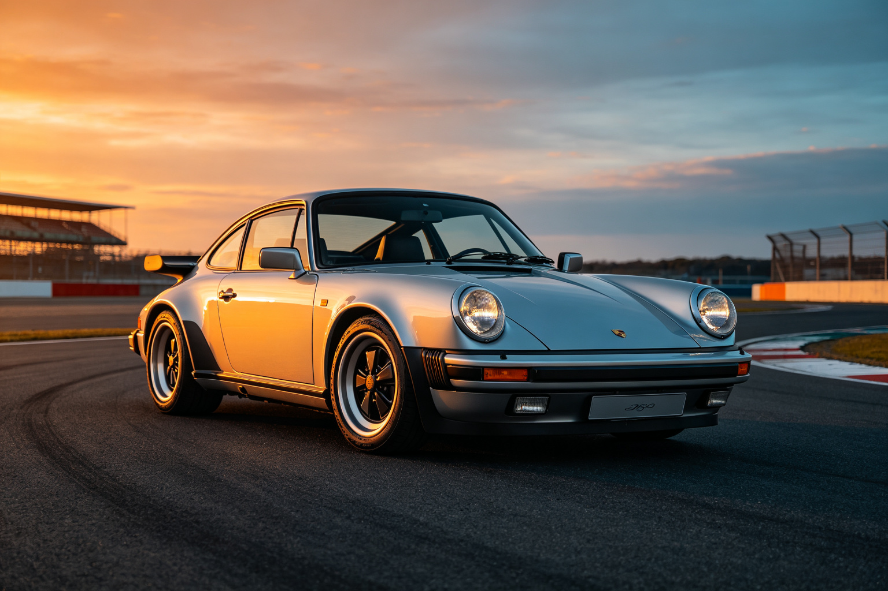

保时捷 911 · BEA 双极情绪美学深度分析
分析对象：保时捷911（Porsche 911），1963年至今，德国斯图加特 分析方法：BEA 双极情绪美学六步法 分析时间：2026-09-13 分析师：BEA 工具生成
一、情绪基调
保时捷911是汽车设计史上的传奇，以其经典的后置后驱布局和蛙眼大灯闻名。整体感受是均衡典雅——圆润的车身曲线带来亲和优雅，而锐利的腰线和低趴姿态带来运动张力，经典与现代在完美的比例中达成平衡。
- 主导范式：🏛️ 均衡典雅（偏崇高震撼）
- W(T) 危极权重估计：0.45
- 第一情绪：经典、优雅、蓄势待发
二、双极构成拆解
亲极元素（P+，安全/优雅）
| 维度 | 元素 | 极性强度 | 作用 |
|---|---|---|---|
| 形状 | 圆润的车顶弧线，经典蛙眼大灯 | P+ 6 | 优雅亲和，经典传承感 |
| 比例 | 黄金比例的车身分割，长车头短车尾 | P+ 7 | 视觉平衡，经典美感 |
| 质感 | 光滑的车漆，温润的内饰材质 | P+ 5 | 高级感，舒适体验 |
| 色彩 | 经典的银色、白色、深蓝 | P+ 5 | 优雅稳重，不过分张扬 |
危极元素（T−，警觉/运动）
| 维度 | 元素 | 极性强度 | 作用 |
|---|---|---|---|
| 姿态 | 低趴的车身，宽体轮拱 | T− 6 | 运动张力，蓄势待发 |
| 线条 | 锐利的腰线，肌肉感的侧翼 | T− 5 | 力量感，速度暗示 |
| 灯组 | 四点式LED大灯，锐利的日行灯 | T− 5 | 科技感，攻击性 |
| 尾部 | 主动式尾翼，双边四出排气 | T− 6 | 性能宣言，运动唤醒 |
主辅比与层级策略
- 主辅比：亲极约55%，危极约45%——亲极主导但危极张力充足
- 层级策略：微差补偿（高级型）——宏观优雅（圆润车身+经典比例），微观运动（锐利腰线+低趴姿态+性能细节），远看经典优雅，近看运动蓄势——"优雅的野兽"是911的BEA诠释。
三、定位：张力 × 秩序 象限
🏆 高张力 × 高秩序 = 美感黄金区（均衡象限）
- 张力：中高（低趴姿态、锐利腰线、性能细节）
- 秩序：极高（黄金比例、经典传承、精确几何）
- 说明：911是均衡典雅的教科书——用经典的秩序框架承载运动的张力，做到"优雅而不软弱，运动而不粗暴"。60年的设计传承本身就是最强的秩序锚点，每一代的微创新都在这个框架内注入新的张力。
四、BEA 四维评分卡
| 维度 | 得分 | 满分 | 评价 |
|---|---|---|---|
| 双极张力 | 22 | 25 | 优雅与运动的平衡精准，张力充足但不过火 |
| 结构秩序 | 25 | 25 | 黄金比例+60年传承，秩序感极强，经典标杆 |
| 阈值安全 | 23 | 25 | 运动张力控制在审美窗口内，无越界元素 |
| 语境适配 | 23 | 25 | 完美匹配跑车定位，经典与现代的平衡 |
| 总分 | 93 | 100 | 均衡典雅的最高典范，汽车设计的常青树 |
五、核心优点
- 经典比例的秩序锚点：长车头短车尾的黄金比例，60年传承形成最强的秩序框架，每一代都在这个框架内微创新
- 微差补偿的高级结构：宏观优雅（圆润车身）+微观运动（锐利细节），远看经典近看蓄势，"优雅的野兽"
- 跨时代的范式稳定性：从1963年至今，911始终停在均衡典雅的黄金象限，不随风格钟摆摆动，这就是经典的定义
六、可优化方向
- 电动化转型的范式挑战：电动化时代，后置后驱的经典布局面临挑战，需要在保持经典秩序的同时注入电动时代的新张力
- 内饰科技感的平衡：现代内饰的大屏化可能破坏经典的机械质感，需要在科技与经典之间找到新的平衡
- 个性化定制的秩序维护：大量个性化选项可能稀释经典的秩序感，需要在个性化与经典之间建立边界
七、总结
保时捷911是BEA均衡典雅范式的最高典范——用60年传承的经典秩序框架，承载运动的张力，做到"优雅而不软弱，运动而不粗暴"。它证明了：真正的经典不是停在过去，而是在稳定的秩序框架内持续注入新的张力，让每一代都既熟悉又新鲜。这就是BEA所说的"高张力×高秩序"黄金区的终极形态——张力在变，秩序永恒。
本报告由 BEA 双极情绪美学分析工具生成 · 理论作者：星空本空 · CC BY 4.0